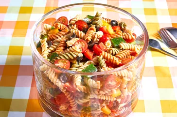

Pasta salad

Description
This pasta salad recipe was given to me by a dear friend many years ago, and I've been making it ever since! It's great for barbecues.
Ingredients
- 1 pound tri-colored spiral pasta
- 1 (16 ounce) bottle Italian-style salad dressing
- 6 tablespoons salad seasoning mix
- 2 cups cherry tomatoes, diced
- 1 green bell pepper, chopped
- 1 red bell pepper, diced
- ½ yellow bell pepper, chopped
- 1 (2.25 ounce) can black olives, chopped
Steps
- Cook and drain the pasta.
- Whisk the dressing with the seasoning mix.
- Combine the pasta with the vegetables, then toss in the seasoned dressing.